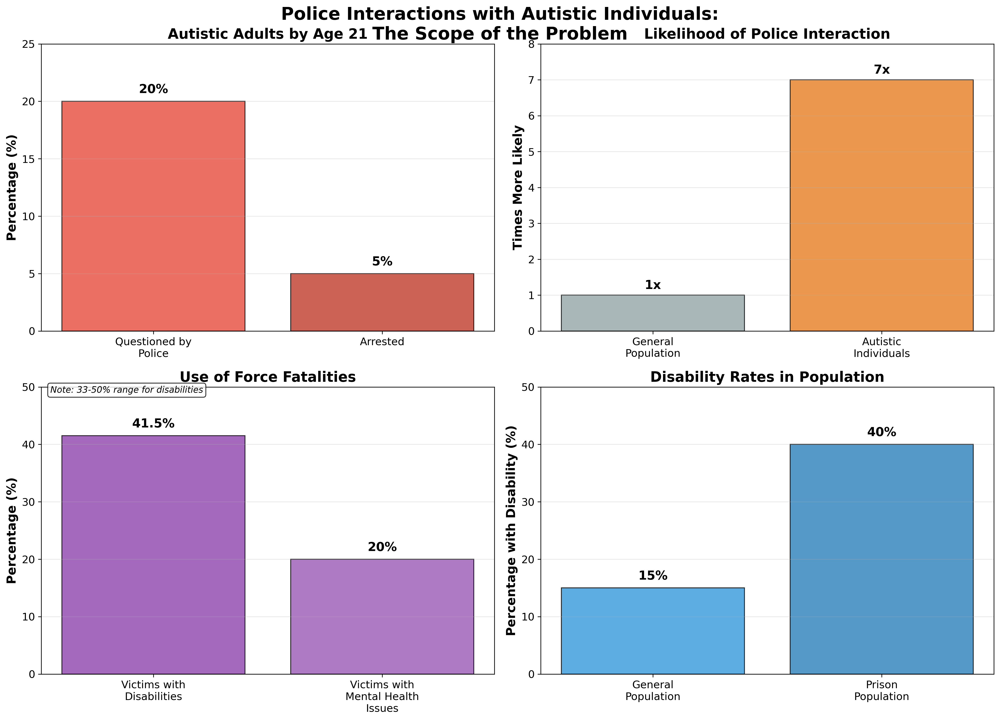
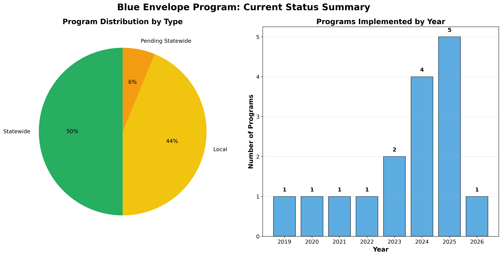
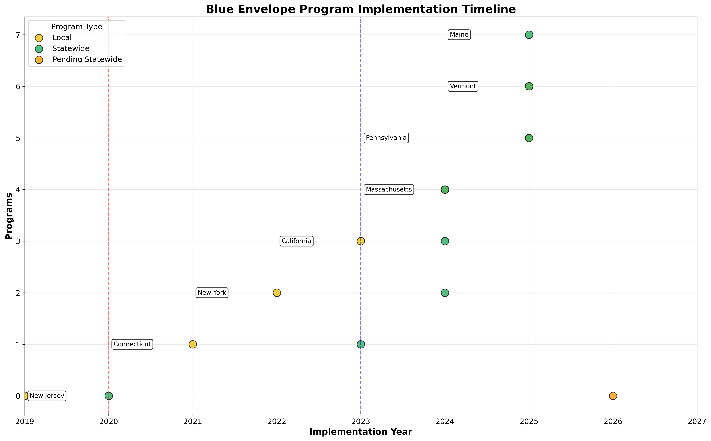
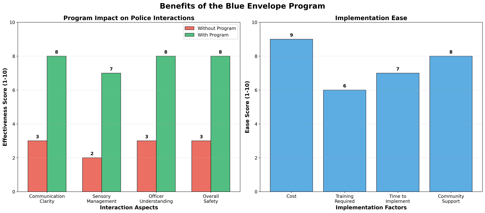
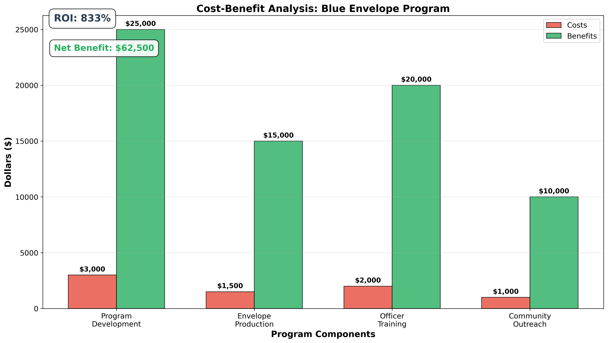

The Blue Envelope Program is a simple, cost-effective solution to improve police interactions with autistic individuals. This presentation provides data-driven evidence of the program's benefits and implementation feasibility.


Connecticut, Massachusetts, Rhode Island, Vermont, Maine, Arizona, Virginia, Delaware
New Jersey, New York, California, Colorado, North Carolina, Pennsylvania, Ohio
Arkansas (implementation scheduled for 2026)


First State Implementation (2020)
DMV-driven program that became the national model. Envelopes distributed through DMV locations statewide.
Legislative Support (2023)
Senate bill S.2558 codifies program. Envelopes available through RMV and police barracks.
New Jersey Counties
Widespread local adoption starting with Hunterdon County pilot in 2019. Many sheriff offices now distribute envelopes.

Minimal financial investment required. Envelopes can be produced locally or through existing partnerships.
Basic officer training on autism awareness and communication strategies. Can be integrated into existing training programs.
Program can be launched within weeks of decision. No complex infrastructure or technology required.
Autism organizations and families are eager to support implementation. High community buy-in expected.
The data clearly shows that the Blue Envelope Program is:
Original program model and implementation guidance
Local and national support for program development
Existing training materials and best practices
DMV, AAA, and other distribution partners